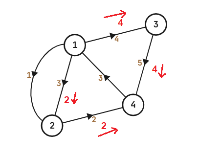

Bài toán
Cho đồ thị có hướng $n$ đỉnh, $m$ cạnh. Tìm luồng cực đại từ đỉnh $1$ đến đỉnh $n$.
Các cạnh trên đồ thị ngầm hiểu là đồ thị có hướng.
Nếu có cạnh $u \rightarrow v$ và $v \rightarrow u$ trong input, thì hai cạnh đó có thể mang lượng tải khác nhau.
Nếu có cạnh $u \rightarrow v$ bị xuất hiện hai lần trong input, thì cạnh $u \rightarrow v$ đó sẽ mang lượng tải là tổng của hai lượng tải từ input ban đầu.
Input
Dòng đầu nhập hai số $n$, $m$.
Kể từ dòng thứ hai, mỗi dòng nhập ba số $u$, $v$, $w$, thể hiện cạnh $u \rightarrow v$ có lượng tải là $w$
Output
Một dòng duy nhất đưa ra luồng cực đại từ đỉnh $1$ đến đỉnh $n$ trên đồ thị.
Giới hạn:
$1 \leq n \leq 10^5$
$1 \leq m \leq 10^6$
$1 \leq w \leq 10^9$
Test ví dụ
Input
4 6
1 2 3
1 2 1
2 4 2
1 3 4
3 4 5
4 1 3
Output
6
Minh họa

/**
* Problem: Find the maximum flow in given graph
*
* Input:
* First line contains n and m: number of nodes and edges on graph
* From the second line to (m+1)'th line, each line contains u, v, c: an directed edge from u to v with capacity c
*
* Output:
* Only 1 line contains the maximum flow found on graph with source is vertex 1 and sink is vertex n
*
* Constraints:
* 1 <= n <= 10^5
* 1 <= m <= 10^6
* 1 <= c <= 10^9
* m <= n*(n-1)/2
* The given graph may contains both (u,v) and (v,u) with different capacities
* The given graph may contains duplicated edges (total capacity on that edge is the sum of individual capacities)
*
* Example:
* Input:
* 4 6
* 1 2 3
* 1 2 1
* 2 4 2
* 1 3 4
* 3 4 5
* 4 1 3
*
* Output:
* 6
*
**/
#include <bits/stdc++.h>
#define up(i,a,b) for (int i = (int)a; i <= (int)b; i++)
using namespace std;
const int maxn = 1e5 + 10;
const int MOD = 1e9 + 7;
const long long MODLL = 1000000000000000011LL;
// Dung luong flow toi da
int n,m,s,t;
struct EDGE{
int v, rev; //rev = chi so cua dinh u trong ma tran ke a[v]
long long capa;
long long flow;
};
vector<EDGE> a[maxn];
// Do thi
long long excess[maxn];
int height[maxn];
bitset<maxn> active;
vector<int> B[maxn];
int cnth[maxn];
int highest;
int cnt_relabel, cnt_gap;
void activate(int u){
if (!active[u] && excess[u] > 0 && height[u] < n){
active[u] = true;
B[height[u]].push_back(u);
highest = max(highest, height[u]);
}
}
void make_gap(int k){
up(u,1,n) if (height[u] >= k){
B[height[u]].clear();
--cnth[height[u]];
height[u] = n;
++cnth[n];
}
++cnt_gap;
// cout << "O(n)\n";
}
void push(int u, int i){
EDGE& e = a[u][i];
int v = e.v;
long long delta = min(excess[u], e.capa - e.flow);
EDGE& rev_e = a[v][e.rev];
e.flow += delta;
rev_e.flow -= delta;
excess[u] -= delta;
excess[v] += delta;
activate(v);
}
void relabel(int u){
--cnth[height[u]];
height[u] = n;
for (EDGE e : a[u]){
if (e.capa - e.flow > 0){
height[u] = min(height[u], height[e.v] + 1);
}
}
++cnth[height[u]];
activate(u);
++cnt_relabel;
// cout << "O(deg(u))\n";
}
void discharge(int u){
for (int i = 0; i < (int)a[u].size(); i++){
EDGE e = a[u][i];
int v = e.v;
if (e.capa - e.flow > 0 && height[u] == height[v] + 1){ //excess[u] > 0
push(u, i);
}
if (excess[u] == 0) return;
}
if (cnth[height[u]] == 1 && cnt_relabel > 50*cnt_gap){
make_gap(height[u]);
} //Heuristic: choose good approximation
else relabel(u);
}
void findMincut(){
vector<pair<int, int> > min_cut;
long long sum = 0;
up(u,1,n) for (EDGE e : a[u]){
int v = e.v;
long long capa = e.capa;
if (capa > 0){
if (height[u] >= n && height[v] < n){
min_cut.push_back(make_pair(u, v));
sum += capa;
}
}
}
// cout << sum << "\n";
// cout << "\n";
// for (auto x : min_cut){
// cout << x.first << " " << x.second << "\n";
// }
}
void findMaxflow(){
excess[s] = MODLL;
height[s] = n;
cnth[0] = n-1;
cnth[n] = 1;
for (int i = 0; i < (int)a[s].size(); i++){
EDGE& e = a[s][i];
if (e.capa > 0) push(s, i);
}
while (highest >= 0){
while (!B[highest].empty()){
int u = B[highest].back();
B[highest].pop_back();
active[u] = false;
if (u == t) continue;
discharge(u);
}
--highest;
}
}
//----- INPUT AND BUILD GRAPH -----
map<pair<int, int>, long long> saved_edges;
map<pair<int, int>, bool> added;
void buildBiGraph(){
up(i,1,m){
int u,v;
long long w;
cin >> u >> v >> w;
if (u == v) continue;
if (u > v) swap(u, v);
saved_edges[make_pair(u, v)] += w;
}
for (auto e : saved_edges){
int u = e.first.first;
int v = e.first.second;
long long w = e.second;
a[u].push_back({v, int(a[v].size()), w, 0});
a[v].push_back({u, int(a[u].size())-1, w, 0});
}
}
void buildDiGraph(){
up(i,1,m){
int u,v;
long long w;
cin >> u >> v >> w;
if (u == v) continue;
saved_edges[make_pair(u, v)] += w;
}
for (auto e : saved_edges){
int u = e.first.first;
int v = e.first.second;
long long w = e.second;
if (!added[make_pair(u, v)]){
added[make_pair(u, v)] = added[make_pair(v, u)] = true;
a[u].push_back({v, int(a[v].size()), w, 0});
a[v].push_back({u, int(a[u].size())-1, saved_edges[make_pair(v, u)], 0});
}
}
}
void find_flow_to_sink();
signed main(){
ios_base::sync_with_stdio(false);
cin.tie(0);
#define Task "A"
if (fopen(Task".inp", "r")){
freopen(Task".inp", "r", stdin);
freopen(Task".out", "w", stdout);
}
cin >> n >> m;
s = 1, t = n;
buildDiGraph(); //choose buildBiGraph() or buildDiGraph() to make graph bidirectional or not.
findMaxflow();
cout << excess[t];
}
void find_flow_to_sink(){
long long sum2 = 0;
for (EDGE& e : a[t]){
int v = e.v;
EDGE& rev_e = a[v][e.rev];
sum2 += rev_e.flow;
}
cout << sum2;
}
//Excess[t], sum(flow from v to t) with all v->t, or sum of capacity on Min-cut edges
//are all max flow we need to find
//Some nodes still have excess, but that's not problem to find max flow